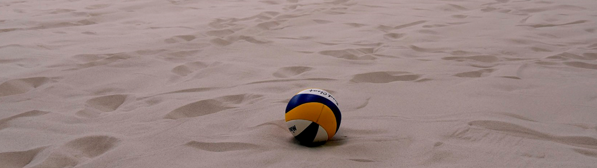

Meer informatie
Wij geloven in open communicatie, daarom informeren we graag iedereen die nog met vragen zit over het Belgium Winter Beachvolley via deze pagina.
Toernooi
- Ten laatste een dag voor het toernooi krijg je een wedstrijdschema en alle andere relevante info via mail toegestuurd.
- We vragen vriendelijk dat je een poging doet om een 30 tal minuten voor de start van je eerste wedstrijd aanwezig te zijn. Er kan uiteraard altijd iets mislopen: Verwittig in dat geval zo snel mogelijk de organisatie! Dan moeten andere mensen niet nodeloos wachten omdat je te laat bent.
- Drank en eten is ter plaatse te verkrijgen aan democratische prijzen.
Inschrijving en betaling
- We weten dat je heel enthousiast bent, maar inschrijven kan pas vanaf een maand voorafgaand aan een toernooi.
- Ben je een late beslisser? Inschrijven voor een toernooi kan tot vrijdag 12:00u, de week van het toernooi.
- Ter plaatse betalen is niet mogelijk. Een team dat niet op voorhand betaald heeft wordt gezien als een team dat niet meedoet aan het toernooi. Hier staan we helaas geen uitzonderingen op toe, betaal dus op tijd!
- Wil je je uitschrijven voor een toernooi? Jammer, maar er kan altijd iets tussenkomen natuurlijk: contacteer de organisatie zo snel mogelijk! Uitschrijven voor een toernooi kan tot vrijdag 12:00u, de week van het toernooi. Je krijgt dan zonder problemen je geld integraal terug. Zeg je later af dan vrijdag 12:00u, de week van het toernooi? Dan krijg je je geld helaas niet terug!
- In het uitzonderlijke geval dat het toernooi of een bepaalde reeks niet zou doorgaan krijg je je inschrijvingsgeld integraal terug.
- Waarom werken onze betalingen op deze manier? We proberen dure betalingssystemen te vermijden want dit levert enkel maar meer kosten op voor ons. Deze kosten zouden we moeten doorrekenen aan de mensen die inschrijven. Op deze manier houden we het inschrijvingsgeld laag.
- 35 EUR is toch niet weinig geld voor een beachvolleybal toernooi? Jawel! Hou er rekening mee dat we binnen spelen in een verwarmde hal met verlichting en douches. De uitbater van deze hal maakt dus een hoop kosten. De toernooi organisatie maakt (helaas) 0.0 EUR winst, al het inschrijvingsgeld gaat rechtstreeks naar de accomodaties en eventuele prijzen.
Locaties
- We hebben twee toplocaties: Outdoorcentrum Schaffen (wel degelijk indoor) en TC De Pollepel (meer dan alleen tennis).
- Beide hallen zijn goed verlicht, verwarmd en hebben aangename douches.
- Wanneer er erg veel deelnemers zijn zou het kunnen dat we beide locaties gebruiken op dezelfde dag. We communiceren dit tijdig zodra we deze overweging maken, zodat jij je plannen hier aan kan aanpassen.
- We hebben het geluk dat we 2 geweldige indoor beachvolleybal accomodaties mogen gebruiken, draag hier samen met ons dan ook zorg voor en laat bijvoorbeeld geen vuilnis achter. Bedankt!
Reglement Belgisch/provinciaal reeksen
- We spelen met de strikte beachvolleybalregels die ook worden toegepast op Belgisch en FIVB niveau. Weet je niet zeker wat we hier mee bedoelen, dan is deze reeks waarschijnlijk niet voor jou! Alle wedstrijden worden gespeeld naar 2 winnende sets tot 21 met een beslissende set tot 15, telkens met 2 punten verschil. Helaas spelen we zonder scheidsrechters: We rekenen op de sportiviteit van onze deelnemers. We zijn (hopelijk) allemaal volwassen mensen, bij discussie spelen we het punt gewoon opnieuw.
- Wedstrijdschemas zijn afhankelijk van het aantal inschrijvingen en de behaalde punten per team. We hebben vaste schema's liggen die eerlijkheid, aantal wedstrijden en plezier optimaliseren. Voor inspiratie kijken we vooral naar het Belgisch Kampioenschap en FIVB toernooi formules. Heb je het gevoel dat we iets fout doen of kunnen verbeteren, laat het ons weten!
- Voor het eerste toernooi van het seizoen delen we het schema willekeurig in, iedereen gelijk voor de wet dus!
- Vanaf het 2de toernooi wordt het schema opgemaakt aan de hand van de opgetelde individuele punten per speler, behaald op alle voorgaande Belgium Winter Beachvolley toernooien. Iedereen start dus "gelijk" voor het eerste toernooi want de loting is willekeurig. Na het eerste toernooi zijn alle "nieuwe" deelnemers die meedoen "NG" (niet geklasseerd) en worden ze met 0 punten (vermoedelijk ergens onderaan) in het schema gezet.
- De individuele puntentelling werkt op deze manier: Bij elke deelname levert een laatste plaats 20 punten op per persoon. Een voorlaatste plaats 40 punten, de 3de laatste plaats 60 punten en zo verder. Wanneer er 6 teams deelnemen krijgen de winnaars dus 120 punten per persoon, de 2des 100 punten per persoon en zo verder. Het aantal punten schaalt dus met het aantal deelnemers: Op een toernooi met 12 deelnemers (het maximum) vallen er dus 240 punten per persoon te verdienen!
- De dagwinnaars van deze reeksen ontvangen elk een bon die 17,5 EUR korting geeft op een deelname aan het eerstvolgende Belgium Winter Beachvolley toernooi (in dezelfde reeks)! Zo kan je samen gratis deelnemen aan het volgende toernooi. Of je partner kan heiligschennis plegen en een nieuw team vormen aan halve prijs wanneer je zelf niet kan, nice! Helaas zijn deze bonnen op naam en dus niet overdraagbaar aan andere mensen. Ook zijn ze enkel te gebruiken voor het eerstvolgende toernooi en niet de toernooien erna. Het specifieke toernooi en de reeks waarvoor je korting krijgt staat aangegeven op je bon.
Reglement Gemengd recreatief reeks
- Alle combinaties van mannen en vrouwen zijn toegelaten. Je mag je dus perfect inschrijven als recreatief mannen team om dan waarschijnlijk kletsen te krijgen van 2 dames en zo met het schaamrood op de wangen naar huis te gaan.
- We spelen zonder strikte beachvolleybalregels. Uiteraard proberen we wel de regels van het zaalvolleybal een beetje te respecteren, maar zolang de bal omhoog gaat zijn we al heel tevreden.
- Wedstrijdschemas zijn voor elke toernooidag willekeurig en worden opgemaakt in volgorde van aankomst. We proberen speeltijd en plezier te maximaliseren.
- We voorzien een prijs voor de winnaar!